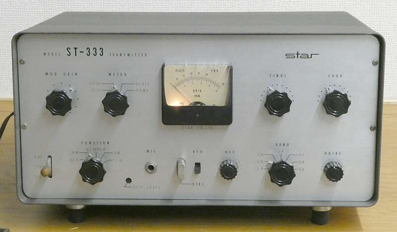
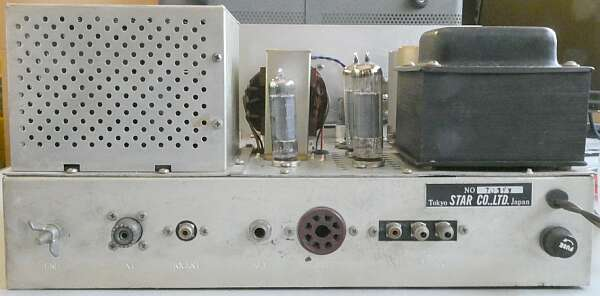
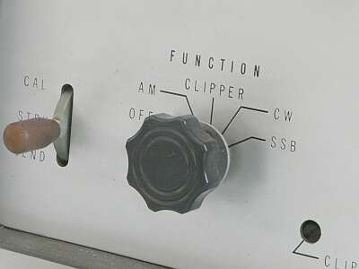
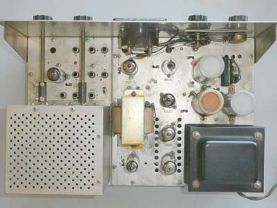
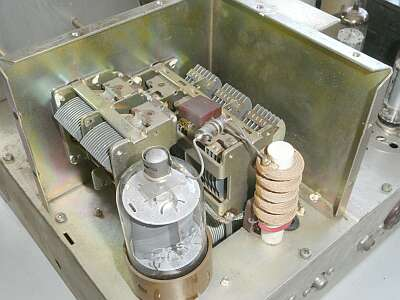
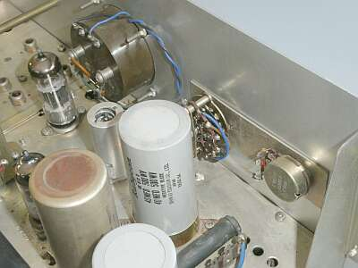
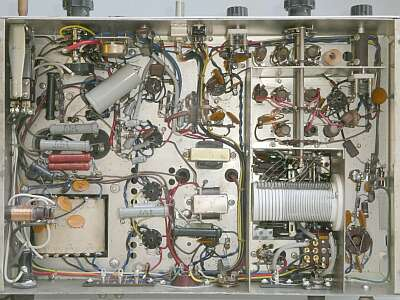
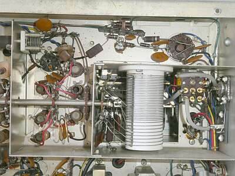
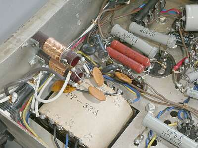

 |
この時代の標準を一歩先んじた、１．９－５０MHz帯をCW、AM １０Wでカバーする送信機です
終段Ｓ２００１／６１４６ ３ステージと、一般的な構成です
が、ユーザーの改造を見込んで、ファンクションＳＷや、電源などに余裕を持たせているところが、極めてアマチュア・ライクで、当時普及が始まったＳＳＢに対しても、アダプタの採用を意識しているところも見逃せません
発売は、１９６６年 サイズ：３８５ ｘ １８５ ｘ ２５５ｍｍ 重量：約１３Ｋｇ
横に並ぶ受信機ですが、同じＳＴＡＲであれば、ＳＲｰ５００Ｘ、ＳＲｰ５５０、ＳＲ-６００あたりが相当すると思います
国内においても、ＳＳＢ化の波が、すぐそこまで来ている時代の送信機です |
|
本機の構成ですが、終段においてはクランプ管を用意して、ドライブに応じてＳＧ電圧を制御・・・無励振時に、終段プレート電流が過大に流れることを防止するように設計してあります
終段管において、まだまだゼロ・バイアスで使うのが当たり前だった時代にあっては、大いなる終段の防御策です
また変調器には、スピーチ・クリッパー回路を用意して、より深い変調と過変調の防止を目指してあるところも好感が持てます
８球、４シリコン・ダイオード、３ゲルマニウム・ダイオードにより構成されています |
|
 |
ケースから取り出していますが、リア・パネルの様子です
ＲＣＡジャック２つは、予備です |
|
 |
FUNCTIONスイッチに、ＳＳＢポジション
ＳＴＡＲからＳＳＢアダプタの発売というのは、なかったと思いますが、
ＰＳＮタイプのアダプタ
例えば、Heath-kit ＳＢ-１０のようなものの接続を想定していたのだと想像します
送受切り替えは、リレーの節約もあるのでしょう、シーメンス・キーが採用されています |
 |
シャーシ上面
中央変調トランスの上がOSC部
その右の縦一列の真空管は、変調器を構成するもの
シールドをかぶっている段がMIC入力部
７１８９Ａプッシュプルです
シャーシ右端１／３は、電源部
変調トランスの下に見えるのがクランプ管です |
 |
終段部
終段管は、Ｓ２００１でした
お決まりのπマッチです
|
 |
フロントパネル裏
シャーシ上面は、メーターと、その切替ＳＷ、そして変調可変（マイク・ゲイン）ＶＲがあるのみ
メーター・ランプ、片側が切れていました |
 |
シャーシ底面 |
 |
終段部 シャーシ下です
ＧＴソケットは、Ｓ２００１が刺さっています |
 |
この当時は、必ずこのようなＡＣラインフィルタが構成されていました |
|
|
| いろんな工夫があるというか、いかにもアマチュア無線家をよく知った設計がなされている、興味深い製品と言えそうです |